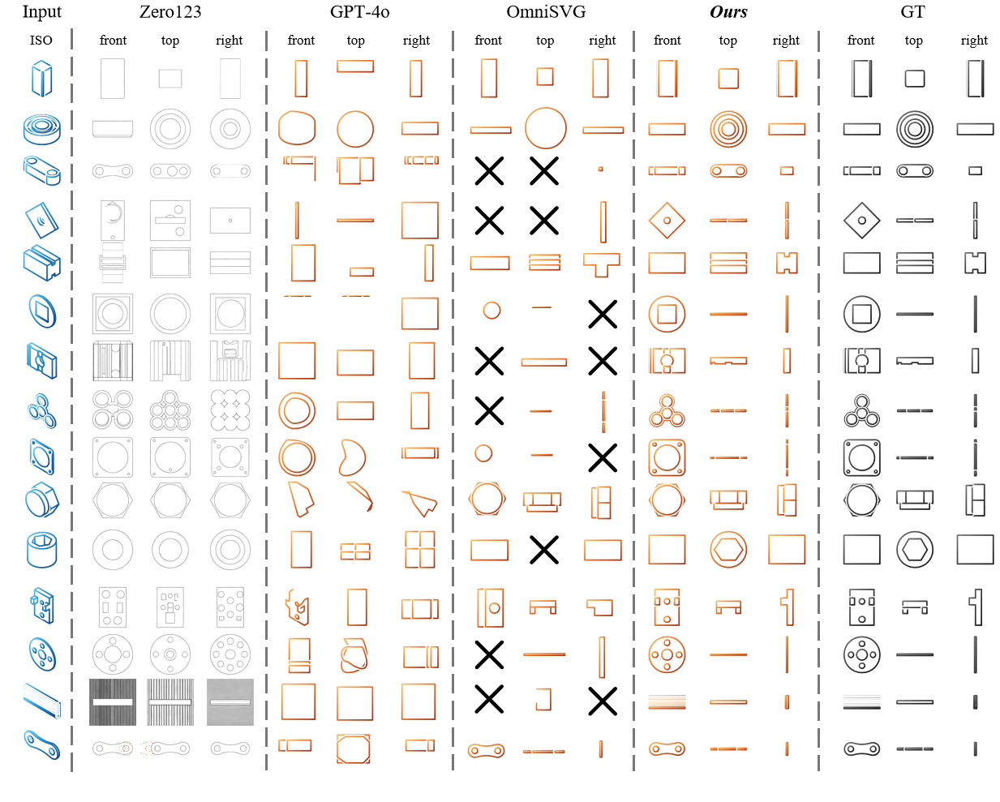
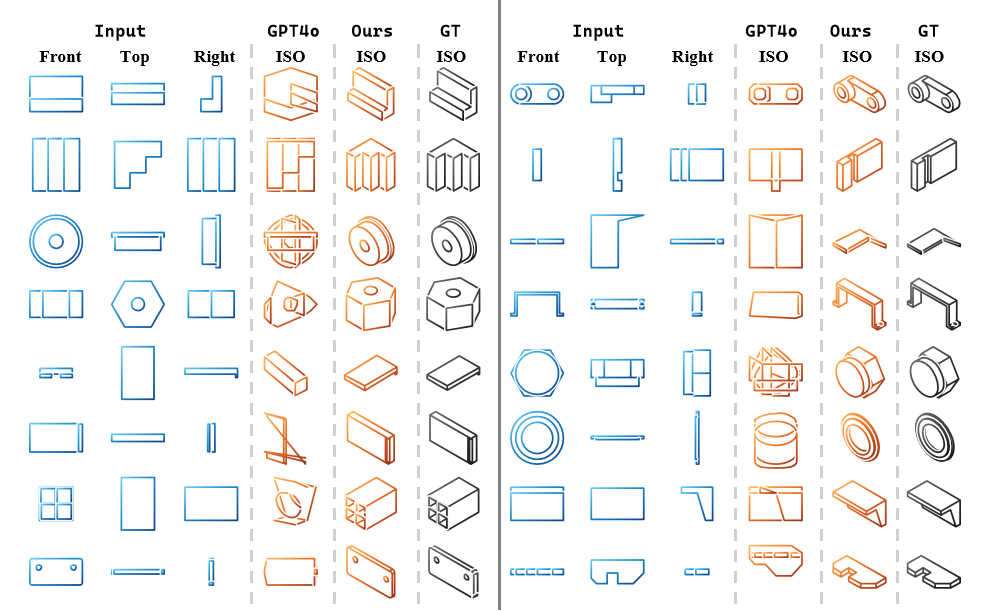
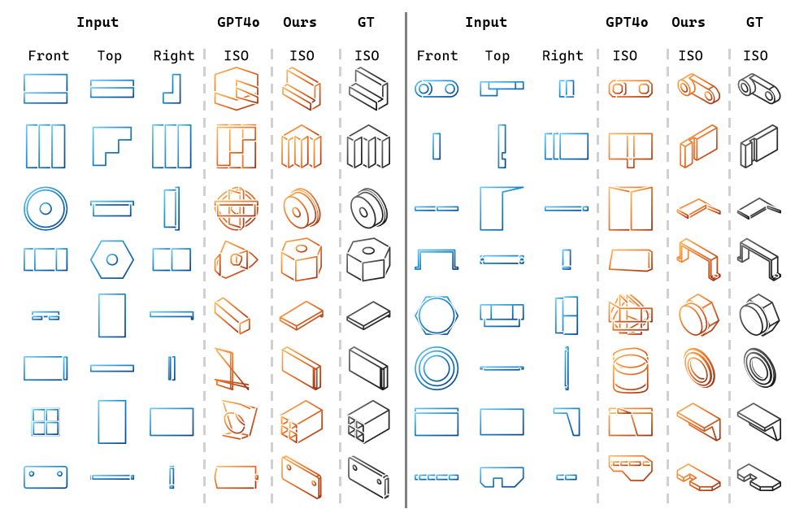
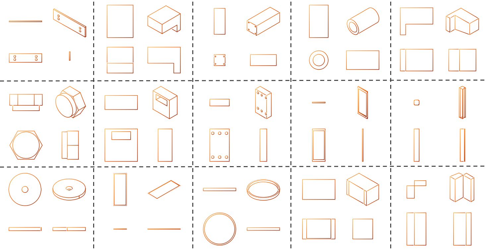

NeurIPS 2026 · Creative AI
DrawingsDreamer: A Unified Multi-ViewEngineering Drawings Generation Model
1School of Computer Science and Engineering, Sun Yat-sen University
2School of Intelligent Systems Engineering, Sun Yat-sen University
NeurIPS 2026
Abstract
Scalable Vector Graphics (SVG) are essential for modern industrial Computer-Aided Design (CAD). However, existing autoregressive SVG generation models are predominantly tailored for artistic creation and struggle to maintain the rigorous geometric fidelity and cross-view spatial alignment required for engineering drawings.
To bridge this gap, we introduce DrawingsDreamer, a unified Large Language Model (LLM)-driven framework for multi-view vector-based engineering drawings generation. By formulating generation purely as sequence modeling, we eliminate the need for raster image encoders. A streamlined representation with hierarchical postfix tokenization guides the model to establish local geometric coordinates before assigning semantic boundaries. A progressive task-aware curriculum lets one model transition from localized structural repair to macroscopic generation.
From geometry to aligned view sequences
Streamlined Representation
We project each CAD object into a canonical set of front, right, top, and isometric views. Hierarchical postfix tokenization makes the model regress coordinates first and close each primitive with an explicit semantic boundary.
Global coordinate normalization preserves alignment across orthographic views while keeping the vocabulary compact and LLM-friendly.
Progressive task-aware curriculum
The same autoregressive model is trained across microscopic repair and macroscopic generation. Sampling moves from local topology learning to partial view alignment and finally to unconstrained multi-view spatial translation.
Unconditional generation
Sample all four aligned views directly from the learned drawing prior.
Cross-view translation
Translate between isometric and orthographic projections while retaining geometry.
Partial view completion
Complete missing orthographic views from an isometric view and a partial context.
Path-level restoration
Restore masked paths with local topological and syntactic validity.
Postfix boundaries
Use explicit end tokens to organize primitives, paths, and views into one sequence.
Qualitative results
The model produces structured drawings across conditional translation, completion, and unconditional sampling tasks.




Citation
If DrawingsDreamer helps your research, please cite the work:
@inproceedings{liu2026drawingsdreamer,
title={DrawingsDreamer: A Unified Multi-View Engineering Drawings Generation Model},
author={Liu, Shurui and Chen, Weide and Yi, Changwang and Wu, Ancong},
booktitle={Advances in Neural Information Processing Systems},
year={2026},
url={https://drawingsdreamer.github.io/}
}